5 个月亲测：养猫的A面与B面
一、吾家橘猫初长成
没想到啊，今天不到五点就开始叫唤，喂了之后想补觉都不行，原计划今天的文章选题不是猫，因为 掐指一算，再过几天才是19 号，是养猫整 5 个月的日子。
暑假的时候，突然开始提供叫醒服务：
每天七点多开始在门外叫，还算适合，起来喂食之后也不闹腾人，吃饱就能安静好一会儿。9 月 1 日开学之后的头几天，它现在我都是不用它喊就出来喂食，逐渐的开始六点左右开始叫唤，也尚能应付着，依然是快速的喂食喂水，这样安然过了两周。
当时虽然已经把卧室门关好准备再睡一个多小时，但猫在门外的叫声是声声入耳。实在是没辙，只能从床上爬起来比往常提前一个多小时做早饭，导致现在都下午咯，头还晕晕的不在状态。
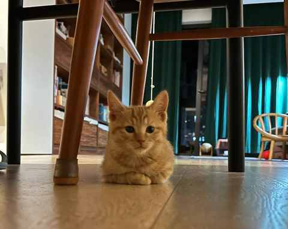
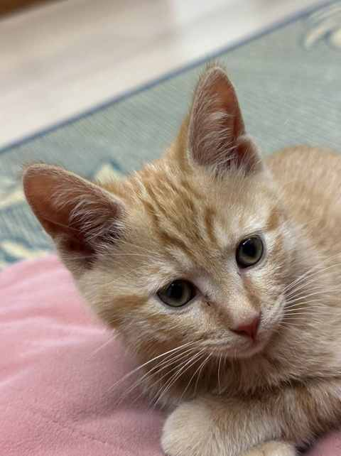
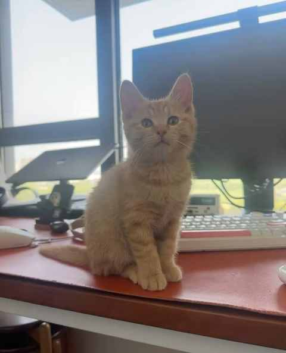
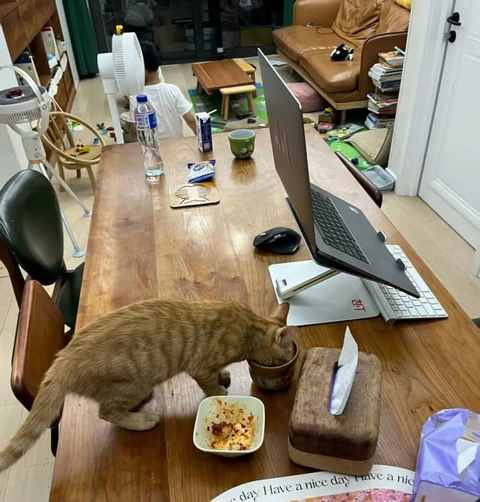
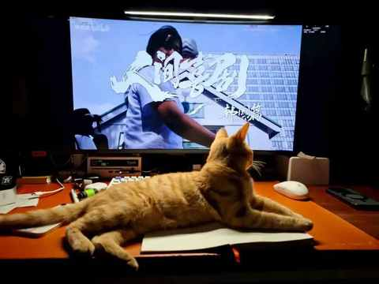
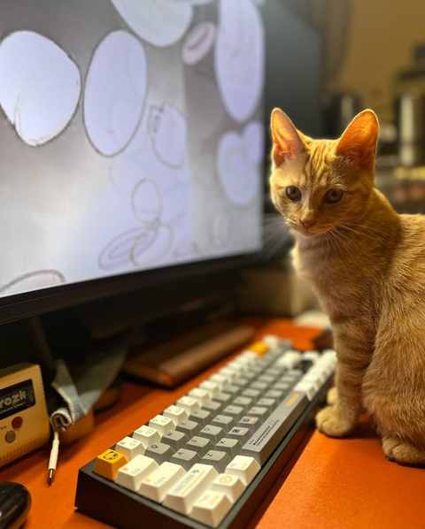
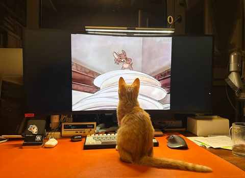
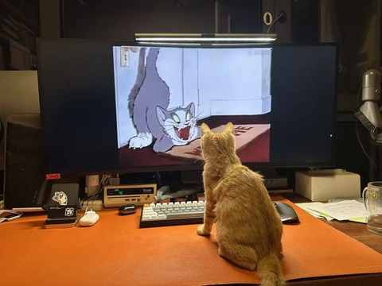
可能上次给它看《猫和老鼠》，它看进去了！
从刚开始的小奶猫到现在接近一只成年猫的大小，饭量也是日渐增长，果然猫粮没有白吃的，橘猫的饭量是名不虚传且令人叹服的。
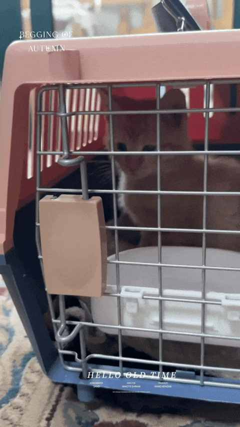
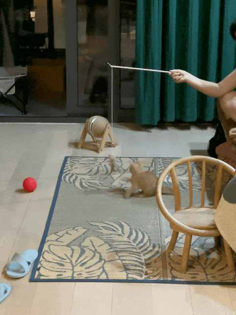
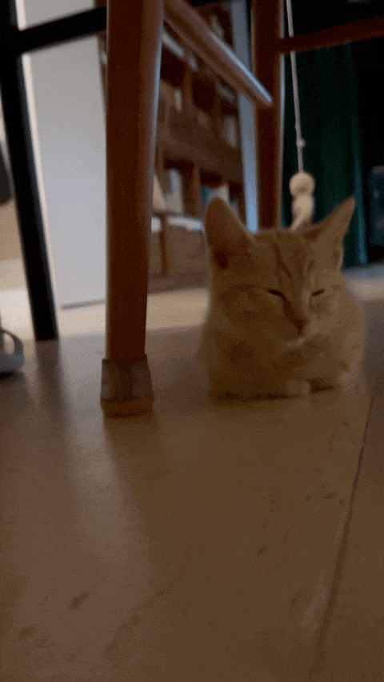
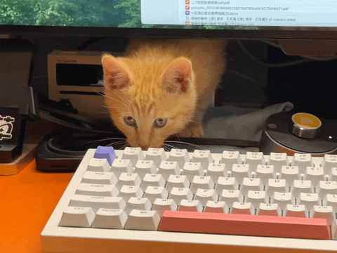
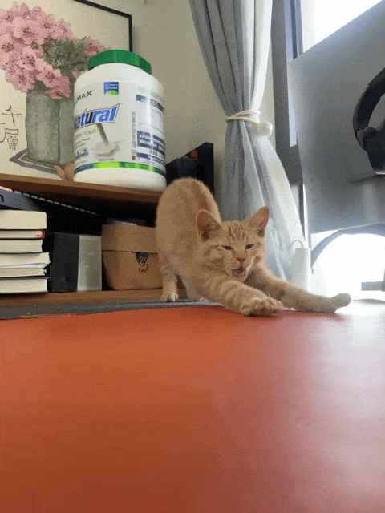
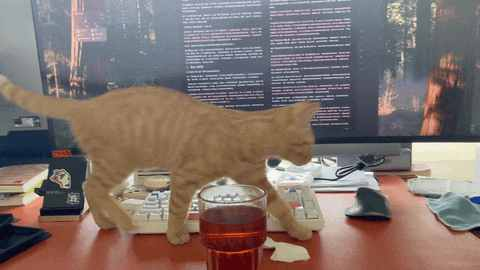
上次打疫苗的时候医生也说 9 月就能做绝育咯，看来是时候了！
二、并不典型的农村养猫经历
农村里面的猫和狗几乎都是散养，但猫不一样的是：
猫是真不着家，几天甚至几周才在家里面闪现下都很正常。到了冬天就又粘在家里了，找个暖和的地方随时切入睡眠模式。
村里的猫也几乎都是各个品种的田园猫：
狸花猫、三花猫、橘猫为主，其他品种偏少。
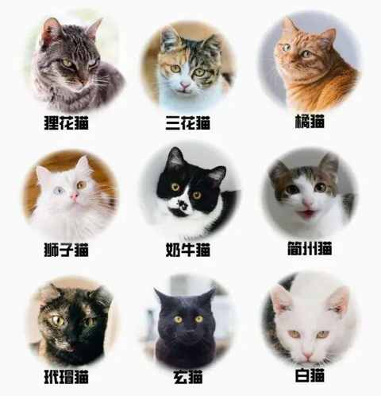
印象中好像也只有在冬天，猫会在家里上厕所，由于吃的挺杂的，那味道特别到能让你用最快的速度找到并屏住呼吸的去清理。
不需要陪伴，饿了会追着人叫，似乎是不断的重复四个字： 给口饭吃！
吃完舔舐好爪子之后便不见了踪迹，是能屈能伸的典型代表。
猫和人一样吃大米饭，偶尔来点鱼骨头和其他肉，不会专门给猫准备猫饭，不过田园猫也不挑，都是吃嘛嘛香。
一只农村猫的日常是这样的：遛弯、抓老鼠、抓麻雀、和其他猫或狗或大鹅打架、飞檐走壁……
三、养猫的A 面与B 面
硬币有两个面，我们无法只要 A 面而不要 B 面。
养猫也是一样，它会冷不丁挠你一下然后快速跑掉，也会在你跑步回来一身汗的时候跑过来蹭蹭你。
① 猫需要陪伴
尤其是在它需要的时候，其他时候它可能理你也可能不理你，但你开猫罐头的时候它一定在。
② 猫挺能忍小孩的
儿子抱它的时候，不管它是否愿意或者准备好，只要被抱住了就是老老实实的，因为小孩子没轻没重，它如果反抗了就会落地，以意想不到的方式，在吃过几次亏之后儿子一抱就老实。
我和老婆想抱就截然不同，它不愿意的时候就使劲蹬开挣脱出去，然后找地方猫起来躲个清静。
③ 猫的卫生习惯 良好
每次吃完饭和如厕后，都有极其严谨的流程要履行，每天都一丝不苟的完成着。
④ 猫无法抑制捕猎天性
这就是为什么会突然 “攻击” 你的原因，有时候抹布也是猎物。
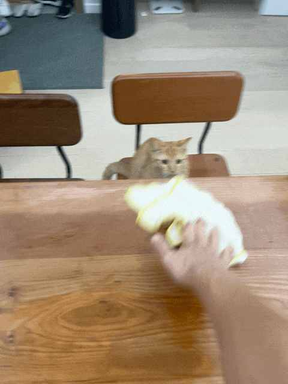
所以，得想办法每天都释放下它的捕猎天性，让它完成捕猎。
⑤ 猫有平等的好奇心
猫平等的看待一切，不分高低贵贱，通通都能扒拉到地上，接着慢悠悠或急匆匆的逃离案发现场，速度和弄出来的声响大小正相关。
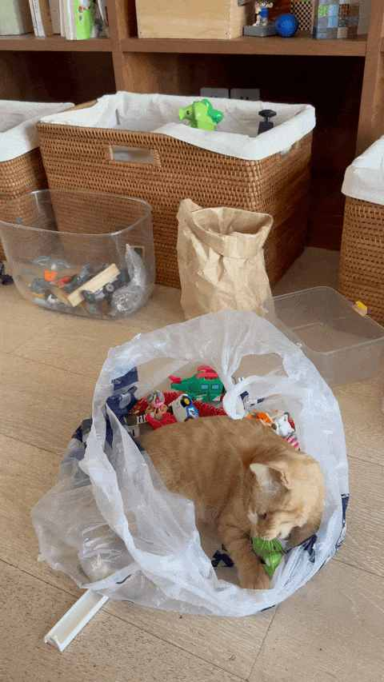
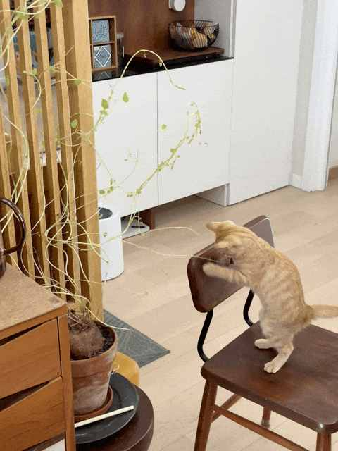
四、友好相处
接下来的十几年，还得和这只橘猫友好相处，各自迁就着。
不过从今天晚上开始，我得好好让它定制几场难度不低的捕猎活动，再根据明天早上免费叫醒服务的时间点来敲定当天的运动项目！
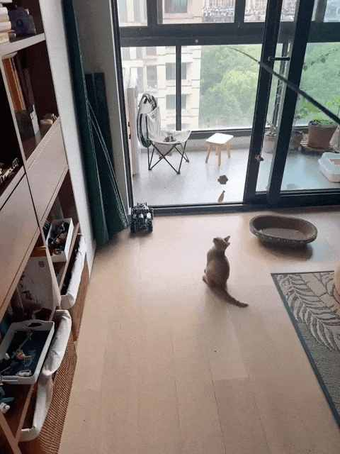